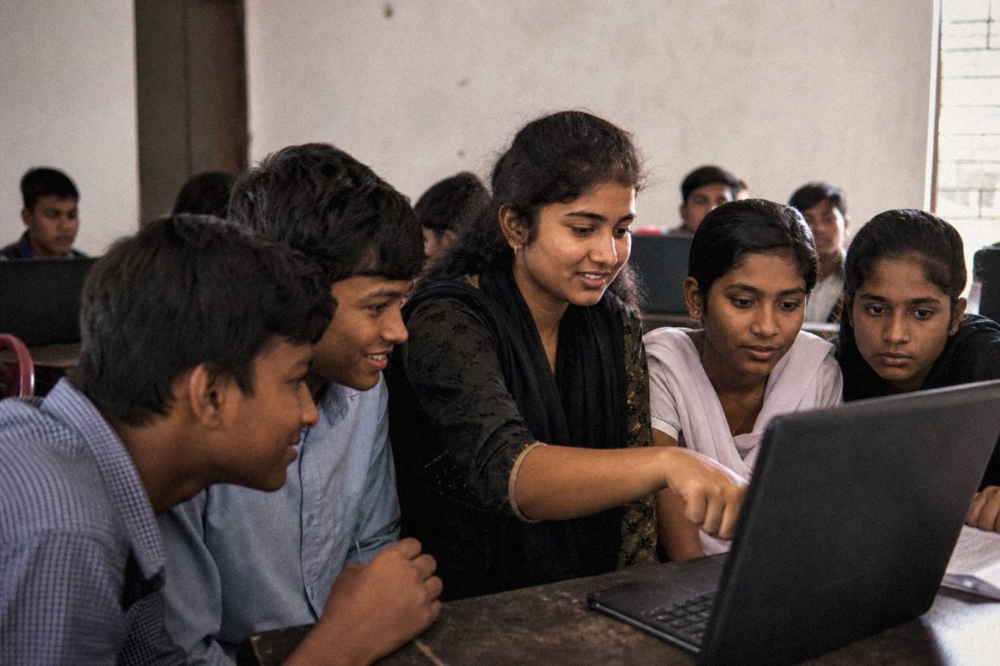

Digital skills lab opens cohort 8
Forty new students — 22 of them young women — started our eight-week digital skills course in Multan this week. The lab has now trained 340 graduates since 2025, and 61% of tracked graduates report their first online earning within four months. The waiting list for cohort 9 is open.